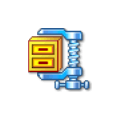

jQuery Tools / Tooltip - Tooltips done right
Simple or Rich
A simple call such as $("img[title]").tooltip(); will enable tooltips by taking advantage of the element's title attribute. If you want complex tooltips with images, tables, forms and links that's possible by placing the tooltip element manually next to the trigger element.
Configure design, timing and positioning
Use CSS to create rounded borders, arrows, gradients or shadows. Big or small, high or low. Use the configuration to tweak pre and post-delays and positioning to your personal needs.
Fading, sliding, dynamic
Tooltip comes with two built-in effects: toggle, and fade and one separate effect, slide, and you can easily build your own effects. The dynamic plugin will dynamically change the tooltip's position so that it always stays in the viewport.
File size: 1.10 Kb
This tool has all the features and configuration options you'll possibly need, such as effect and a plugin framework, scripting API and an event model. A smaller codebase is easier to control and results in snappier behaviour. Without gzipping the size is 3.5 Kb.
Usage
Here is the simplest possible Tooltip initialization:
$("[title]").tooltip();You select one or more elements with a jQuery selector that will trigger the tooltip(s). The trigger's title attribute will be used as the tooltip content. The actual tooltip element is auto-generated when it is being shown for the first time. Look at the minimal setup to understand the basics.
Manual tooltips
Manual tooltips are HTML elements (typically DIVs) that are placed next to the trigger element and they can contain any HTML such as images, links and tables. The initialization is identical but now we assume that the trigger element does not have a title attribute.
$(".trigger").tooltip();After this the element next to the trigger is being used as the tooltip.
Tooltip configuration
Tooltip has many configuration options to tweak the behaviour. Here is an example configuration with two options:
$(".trigger").tooltip({ position: "bottom left", opacity: 0.7});Demos
We believe that the best way to learn is through demos. The following demos are fully documented and a standalone page is provided to get tooltip working on your site. It's really important to study the first demo "Basics of using the tooltip", because it teaches you the basics of using the library.
Using any HTML inside the tooltip
Imitating browsers default tooltip
tooltip Graphics
You can use our graphics as the basis for your design. You can freely change the design as you see fit. Click the image on the right to download a zip file. Before using the graphics, you should consult the User's Guide on how graphics can be used when designing the look and feel of the tools.
Here are a few examples of what is included in the zip file:
Configuration
| property | default | description |
|---|---|---|
| cancelDefault | true |
Since 1.1.0. When tooltip content is fetched from the title
attribute of the trigger element this property cancels the default
tooltip behaviour executed by the browser. This is achieved by simply
removing the title attribute from the trigger.
You can still retrieve/modify the title value by calling jQuery's data("title") method for the trigger. |
| effect | 'toggle' |
Specifies how the tooltip is shown and hidden. There are two built-in effects that can be used as values:
toggle. A simple show/hide effect. This is the default fade. A simple fade in/fade out effect There is also a slide effect which is not included in the tool itself. You can build your own effects too. |
| delay | 30 |
Specifies how long the tooltip remains visible after the mouse leaves the trigger. This is necessary if the tootip has interactive content and the user will need time to move to the tootip area. By setting this to 0 the tooltip will disappear as soon as the mouse moves away from the trigger element. |
| events | Object |
A configuration object that specifies when the tooltip will be shown
and hidden. You can specify different events for different kinds of
elements. Here are the default values for this property:
You can read more about this topic in the event management chapter. |
| layout | '<div/>' |
Since 1.2.0 the HTML layout for the generated tooltip. The HTML can be as complex a layout as you wish. You can, for example, add a nested span element as a placeholder for an arrow. |
| offset | [0, 0] |
Fine tunes the tooltip position specified with the position property. See the positioning details for more information. |
| opacity | 1 |
The transparency of the tooltip. For example, 0 means invisible, 1 means no transparency (fully visible) and 0.4 means that 40% of the tooltip is shown. If your tooltip uses a CSS background image, you can set the transparency of the image if it has been saved in the PNG24 graphics format. Remember that Internet Explorer 6 does not natively support PNG transparency. |
| position | 'top center' |
Specifies the position of the tooltip. See the positioning details for more information. The old format: ['top', 'center'] is deprecated and will be removed in the future. |
| predelay | 0 |
Since 1.1.0. Specifies the delay (in milliseconds) before the tooltip is shown. By default there is no delay. |
| relative | false |
Since 1.1.1. by default the tooltip position is now determined relative to the document (by using the offset() method of jQuery). By enabling this property the tooltip position is determined relative to the parent element |
| tip | |
A jQuery selector for a single tooltip element. For example #mytip. This option is only valid if you want to manually define a single tooltip for multiple trigger elements simultaneously. Since 1.2.5 title attribute can still be used as the tooltip contents. |
| tipClass | 'tooltip' |
Since 1.2.0. CSS class name for the generated tooltip element. |
Tooltip positioning
The tooltip position is specified with two different configuration properties: position and offset. The position property specifies the position in relation to the trigger element. For example, a value of 'bottom center' will place the tooltip on the bottom edge of the trigger, centered horizontally. The following image illustrates the "slots" that you can use:
The offset property fine tunes the tooltip position specified with the position property. For example, the value [10, -20] moves the tooltip position 10px downwards and 20px to the left. The first value modifies the vertical positioning from the top edge of the tooltip and the second value modifies the horizontal positioning from the left edge of the tooltip. Positive values move the tooltip downward and to the right, while negative values move the tooltip upward and to the left.
Events
Make sure you have read about Events in jQuery Tools. All event listeners receive the Event Object as the first argument.
| event | When it occurs? |
|---|---|
| onBeforeShow | before the tooltip is shown. second argument is the tooltip position to be used. This is an object with values {top: integer, left: integer} |
| onShow | after the tooltip is shown. |
| onBeforeHide | before the tooltip is hidden |
| onHide | when the tooltip is hidden. |
Here is an example of an onShow callback function that fades out the trigger element when the tooltip is shown:
$("label").tooltip({
// change trigger opacity slowly to 0.8
onShow: function() {
this.getTrigger().fadeTo("slow", 0.8);
}
});Event management
jQuery Tooltip allows you to fully control when the tooltip will be shown or hidden. You can specify different events for different types of elements. You can control this behaviour with the events configuration variable which has following values by default:
events: {
def: "mouseenter,mouseleave", // default show/hide events for an element
input: "focus,blur", // for all input elements
widget: "focus mouseenter,blur mouseleave", // select, checkbox, radio, button
tooltip: "mouseenter,mouseleave" // the tooltip element
}This specifies opening and closing events for various types of trigger elements. def accepts a value mouseover,mouseout which means that by default the tooltip is shown when the mouse moves over the trigger and hides when the mouse moves away from the trigger. For input elements (text, textarea, password) the tooltip appears when the input is focused and hides when focus moves out of the field.
widget is a catchall type which means select, checkbox, radio and button elements. For them the tooltip is shown on both focus and mouseover events and hidden on both blur and mouseout events. This is just a convenience because these elements usually need some kind of tooltip behaviour.
You can also customize the events for the tooltip element. By default the tooltip stays visible when the mouse is moved over it and it is hidden upon mouseleave. If you don't want to close the tooltip upon mouseleave, you can simply specify: tooltip: "mouseenter". This gives you the possibility of closing the tooltip programmatically. This has been done on the login/signup boxes on the main navigation bar of this website.
If you want to customize these events you can follow the example below:
$("label").tooltip({
events: {
input: 'click, blur',
checkbox: 'mouseover click, mouseout',
date: 'click, blur'
}
});This will override the events for every input element. We have also defined customized events for the checkbox field. The tool checks for the trigger element's type attribute to lookup the appropriate events from the configuration.
The format of the value is: showEvent11 showEvent2 ... showEventN, closeEvent1 closeEvent2 ... closeEventN. You first supply all showing events separated with spaces followed by a comma (,) followed by all close events separated with spaces. A list of available events can be found here. Look at the "Event Helpers" section for more information.
Nothing stops you from adding special types for your elements just by defining a type attribute. Here we use a date type that was added to the HTML5 specification and the corresponding element on the page is defined like this:
<input type="date" name="birthDate" />Here is a demo that shows you the various event types in action.
Scripting API
First make sure you have familiarized yourself with jQuery Tools scripting.
Here is a list of all API methods:
| method | return value | description/example |
|---|---|---|
| show() | API |
Shows the tooltip. |
| hide() | API |
Hides the tooltip. |
| isShown(fully) | boolean |
Returns true if the tooltip is visible. Since 1.2.0 you can supply a boolean argument that makes sure that the function returns true only if the tooltip is fully visible (in it's final position and opacity). |
| getTip() | jQuery |
Returns the tooltip as a jQuery object. |
| getTrigger() | jQuery |
Returns the triggering element as a jQuery object. |
| getConf() | Object |
Returns the tooltip configuration. |
Built-in effect: fade
The built-in effect "fade" has its own set of configuration options as follows:
| property | default | description |
|---|---|---|
| fadeInSpeed | 400 | The fade-in speed when the tooltip is shown, in milliseconds. |
| fadeOutSpeed | 200 | The fade-out speed when the tooltip is hidden, in milliseconds. |
Making custom effects
If you want to make custom effects, you'll use the $.tools.tooltip.addEffect method. This method is "static", meaning that you don't have to have the tooltip API (or instance) already loaded. You can add effects before any tooltips are constructed.
This method accepts three arguments. The first argument is the effect name, the second argument is the function that performs the required functionality for showing the tooltip and the third argument is a function that hides the tooltip. You can use this method to modify existing effects or add new ones. Here is an example:
// adds an effect called "myEffect" to the tooltip
$.tools.tooltip.addEffect("myEffect",
// show function
function(done) {
// 'this' variable is a reference to the tooltip API
var conf = this.getConf(), tip = this.getTip();
// peform your effect. for example:
tip.css({opacity: 1, width: '+=50'});
// after you have finished you must do
done.call();
},
// hide function
function(done) {
// peform your effect. for example:
this.getTip().animate({opacity: 0, width: '-=50'}, done);
}
);As you can see inside the functions the this variable is a pointer to the scripting API. Which gives you access to various parts of the tooltip elements. The functions are fed with one argument which is a reference to a function that must be called after you have performed your effect. The reason for this is that many times those effects perform animations that have a certain duration. We must know when these animations are finished so that the onShow and onHide events are really called after the tooltip is completely shown or hidden.
Note: if you are using jQuery's animate method the "done" function can simply be given to this method as the last argument. jQuery will take care of it after the animation finishes.
The default effect
Effects are actually quite easy to implement. Here are the functions for the default show/hide effect:
// show function
function(done) {
this.getTip().show();
done.call();
},
// hide function
function(done) {
this.getTip().hide();
done.call();
}Look at tooltip's source code for more examples of the effects. The basic idea is to use your jQuery skills together with the API methods. Here you can see a demo about the custom sliding effect.